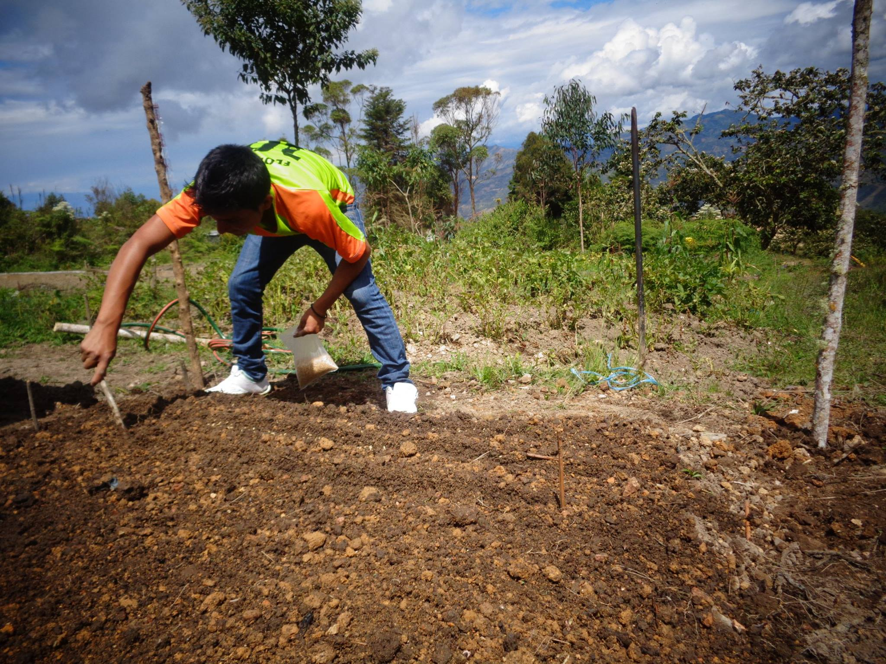

DURACIÓN DE LA CARRERA TÉCNICA DE PRODUCCIÓN AGROPECUARIA
La formación del futuro técnico en PRODUCCIÓN AGROPECUARIA DURA 03 AÑOS – 06 SEMESTRES – 18 SEMANAS POR SEMESTRE.
Los alumnos durante su formación académica realizan sus prácticas pre profesionales que consisten en 05 Módulo y reciben su Certificación Modular otorgado por el Instituto y visada por la DRE Cajamarca.
Las EFSRT, se resumen en 05 módulos, son los siguientes:
a) Producción de Cultivos, con una duración de 210 horas.
b) Producción de Animales Menores, con una duración de 120 horas.
c) Protección Agropecuaria, con una duración de 170 horas.
d) Producción de Plantas en Vivero, con una duración de 150 horas.
e) Producción de Animales Mayores, con una duración de 265 horas.

Módulos Técnicos Profesionales
MÓDULO I: PRODUCCIÓN DE CULTIVOS
MÓDULO II: PRODUCCIÓN DE ANIMALES MENORES
MÓDULO III: PROTECCIÓN AGROPECUARIA
MÓDULO IV: PRODUCCIÓN DE PLANTAS EN VIVEROS
MÓDULO V: PRODUCCIÓN DE ANIMALES MAYORES
Los egresados reciben el TÍTULO PROFESIONAL de TÉCNICO EN PRODUCCIÓN AGROPECUARIA, a NOMBRE DE LA NACIÓN.
El profesional técnico en producción agropecuaria está en la capacidad de asumir funciones en diversas áreas como:
Sanidad animal y vegetal.
Crianza, explotación, manejo, producción, reproducción de los animales domésticos que explota el hombre, para su subsistencia.
Manejo, explotación y producción agropecuaria.
Asistente técnico agrícola, pecuario, controlador y evaluador sanitario.
Constitución de microempresas agropecuarias.
Crianza, explotación, manejo, producción de peces de agua dulce.